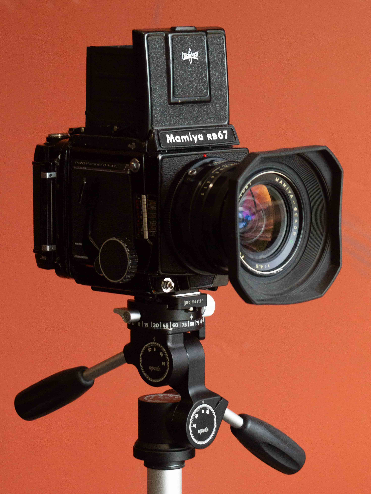
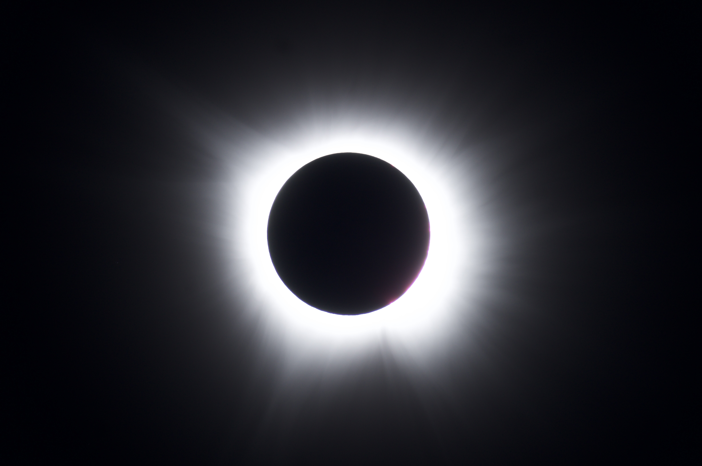
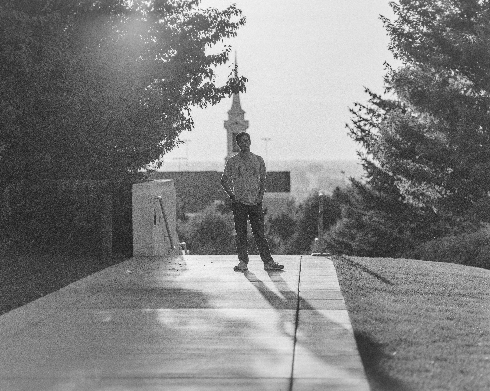

About My Photography
Photography is my artistic medium of choice. I believe that a mind that is open to both seeing the world
artistically and scientifically can create truly unique work. My approach combines technical skill with
creative vision, allowing me to capture moments in a way that resonates with me.
I focus on a variety of subjects, from landscapes to portraits, and I enjoy experimenting with different
styles and techniques. My goal is to create images that evoke emotion and tell a story, whether it's a serene
landscape or a candid moment with a loved one. I am comfortable with both film and digital photography, and
I'm comfortable with a range of equipment, from medium format film cameras to DSLRs to dedicated astronomy
cameras.
My Gear
I use a variety of cameras and lenses to achieve different effects. My main camera is a Mamiya RB67, which I use for medium format photography. I also have a Sony a37 for digital photography, and I often use an SVBONY 540mm f/7 scope for astrophotography. To take pictures of planets, I use a ZWO ASI678MC.

Photography

Old Trailer
This photo was a spur of the moment thing. I was walking with my sister in her neighborhood, and I saw this old trailer out of the corner of my eye. I quickly got my Mamiya RB67 with a 50mm lens out and snapped the photo at 1/250" at f/22

Totality
This photo was taken during the total solar eclipse on April 8, 2024 in Bloomfield, IN, using a Sony a37 with an SVBONY 540mm f/7 scope. It was shot without a filter during totality.

My Father's Portrait
This photo was taken in my family's home. I requested my dad to play the ukelele a little, and I set up the shot. This is one of the most meaningful photographs I have ever taken. Definitely one of my favorites.

My Own Portrait
This is one of my most proud photos. Me and a friend of mine were walking next to the Rexburg Idaho temple around 6:00, and we were testing out some 23-year old expired Kodak Tri-X 320 film, and we saw this scene. I set up the camera and metered for 64 ISO. He took the shot, and this is the result